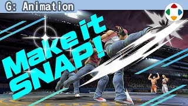
速览
把原本 2D 的游戏落到 3D 等时，即使姿势一样，2D 游戏利落的印象也常常受损。动作制作工具非常方便：设定一定姿势后，其余它会自动补间；原样会有穿模等破绽，修正也简单。但方便却不好：即使用与 2D 游戏相同的时间、相同的姿势，中间的动作会留下印象，容易显得软绵。例如原作的预备是这样、攻击是这样，用多边形角色再现大概是这样（中踢位置出于游戏性稍微降低）。这动作不说不行——不，要说——8 帧出踢，却软乎乎的，不好。《特别版》成品是这样：同样 8 帧的踢，动作印象天差地别，看起来很锋利。决定姿势的地方叫关键帧，到达关键帧的方式要偏极端：中间帧时间几乎不要，时间留给预备和攻击；可以的话比原关键帧拉得更大。这是原作隆下重拳的上勾拳，非常好的点阵图，充满动感；原作只用这 3 个图案往返表现。但原样落到 CG 并补间，势头就被扼杀。《大乱斗》是这样做的：看起来和原作印象没差多少，但首先预备的右前臂，原作一开始就在前面，这里要往后拉得更多，这部分蓄力较长；有接近原作 3 张图的姿势，但各用 1 帧一口气送出。命中就会留下印象，挥出要果断；最初第 1 帧差别很大——原作从下蹲开始，《大乱斗》要更有势头。最后的收招不走与攻击相同的轨迹，必然成为与 3 张往返的原作不同的构图，这里也尽量不留破绽；和待机一样的姿势是损失。每个游戏有各自目标，不一定跳帧就好，但要始终思考是否符合游戏、是否充分夸张。补间是填补间隙，应善用，但要注意别因此让印象笨重。
1. 补间让动作变软 0:03
把原本 2D 的游戏落到 3D 时，即使姿势一样，2D 游戏利落的印象也常常受损。
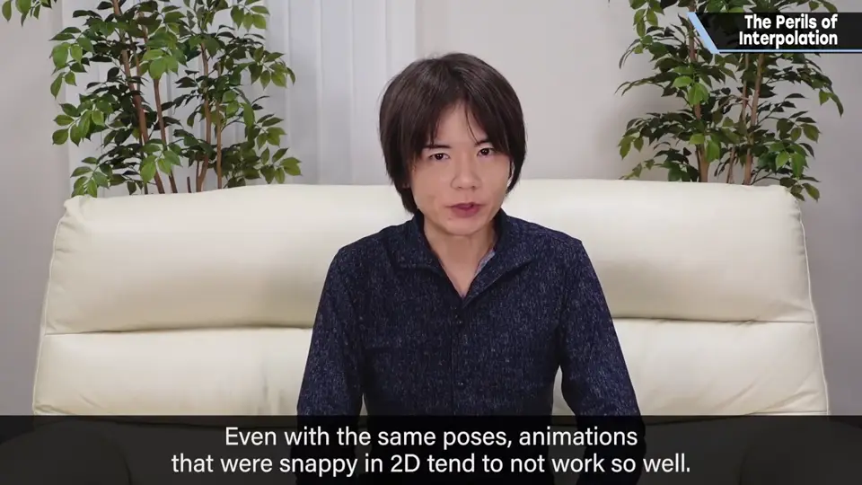
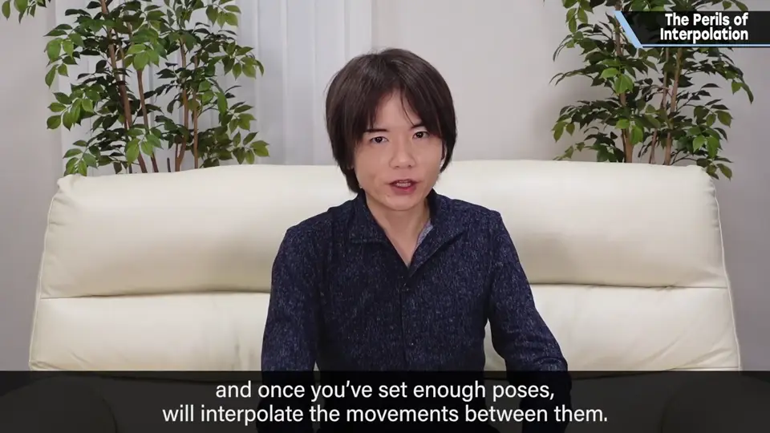
动作制作工具非常方便：设定一定姿势后，其余会自动补间。原样会有穿模等破绽，修正也简单。
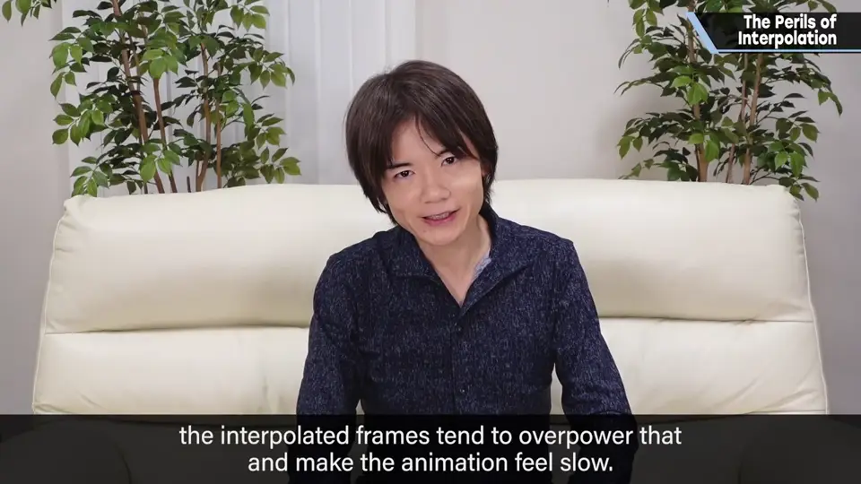
2. 特瑞的中踢 0:50
例如原作的预备是这样、攻击是这样。用多边形角色再现，大概是这样（中踢位置出于游戏性稍微降低）。
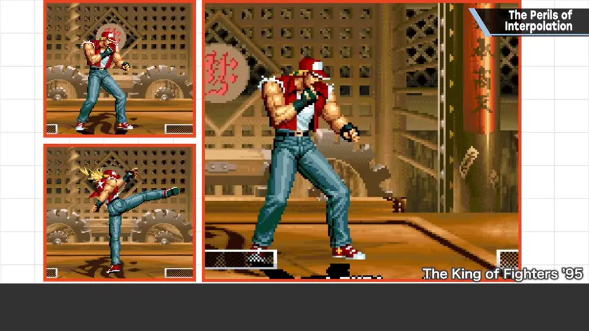
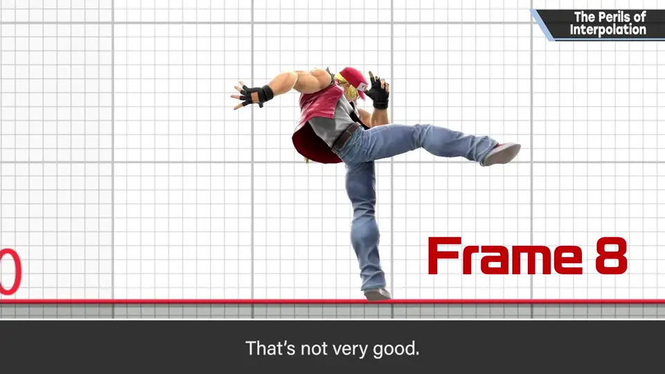
这动作不说不行——不，还是要说——8 帧出踢，却软乎乎的。这不好。
《特别版》成品是这样：同样 8 帧的踢，动作印象天差地别，看起来很锋利。
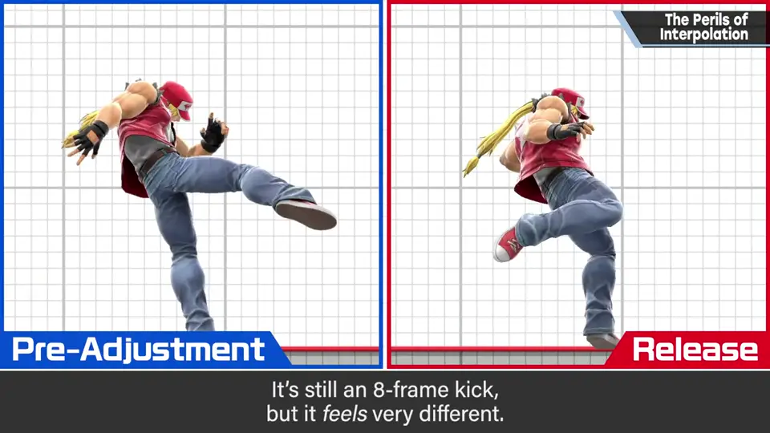
3. 关键帧的到达方式 1:35
决定姿势的地方叫关键帧；到达关键帧的方式要偏极端。
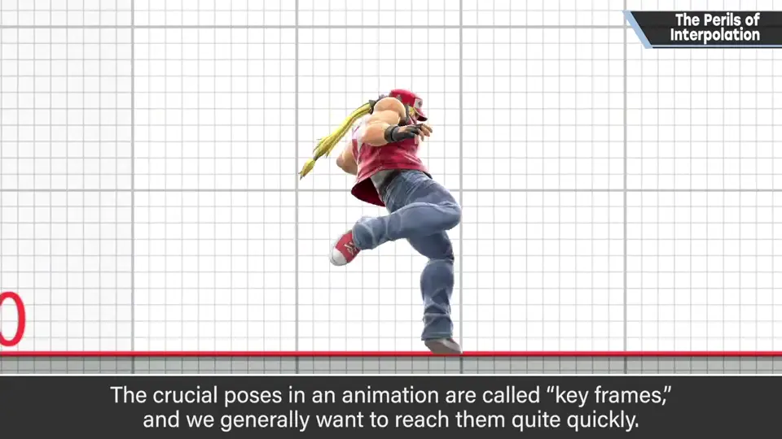
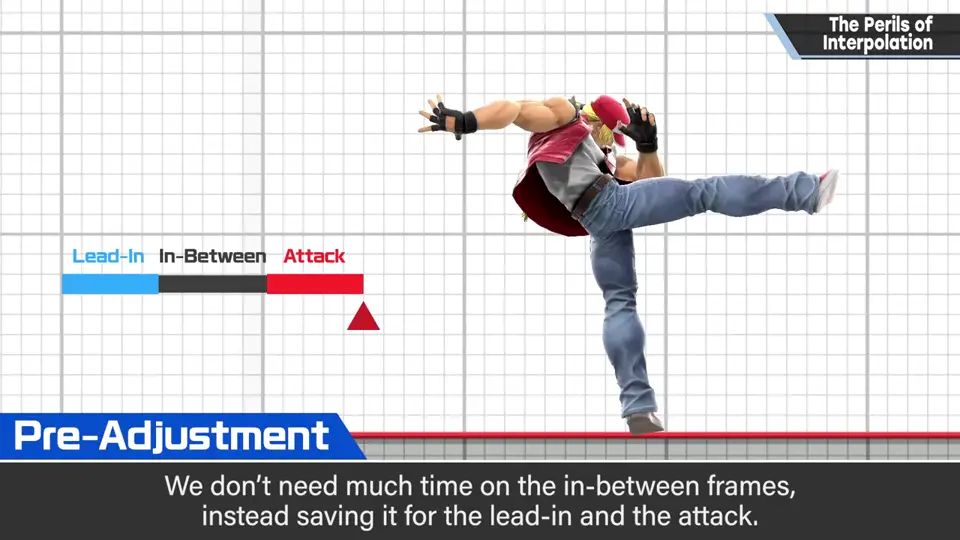
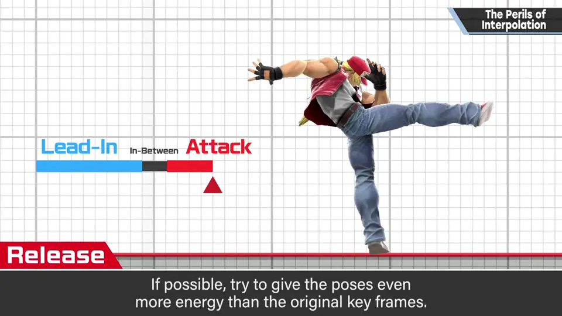
4. 隆的上勾拳 2:02
这是原作隆下重拳的上勾拳：非常好的点阵图，充满动感。原作只用这 3 个图案往返表现。
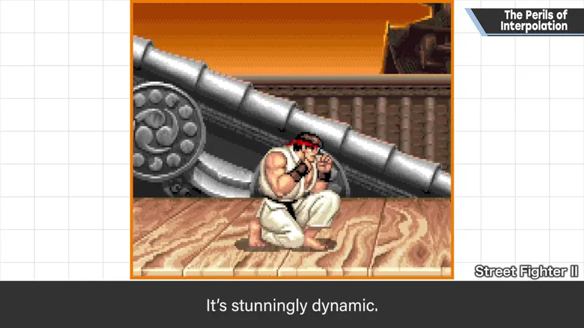
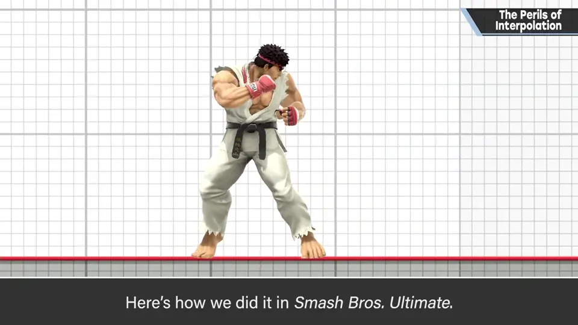
但原样落到 CG 并补间，势头就会被扼杀。《大乱斗》是这样做的：
- 预备的右前臂：原作一开始就在前面，这里往后拉得更多；这部分蓄力较长。
- 有接近原作 3 张图的姿势，但各用 1 帧一口气送出。
- 命中就会留下印象，挥出要果断；原作从下蹲开始，《大乱斗》第 1 帧更有势头。
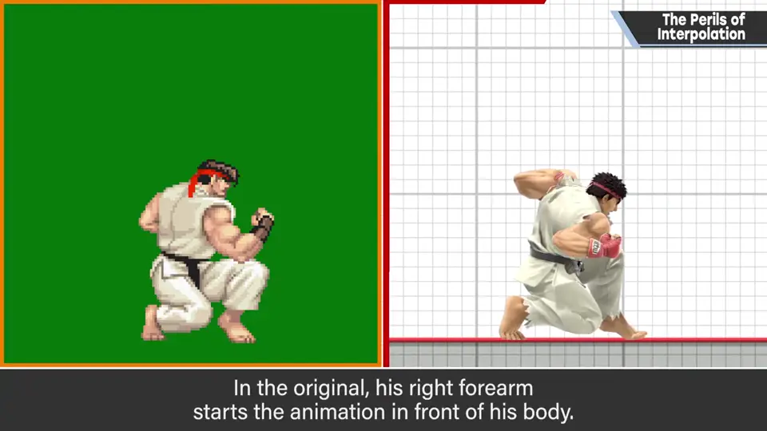
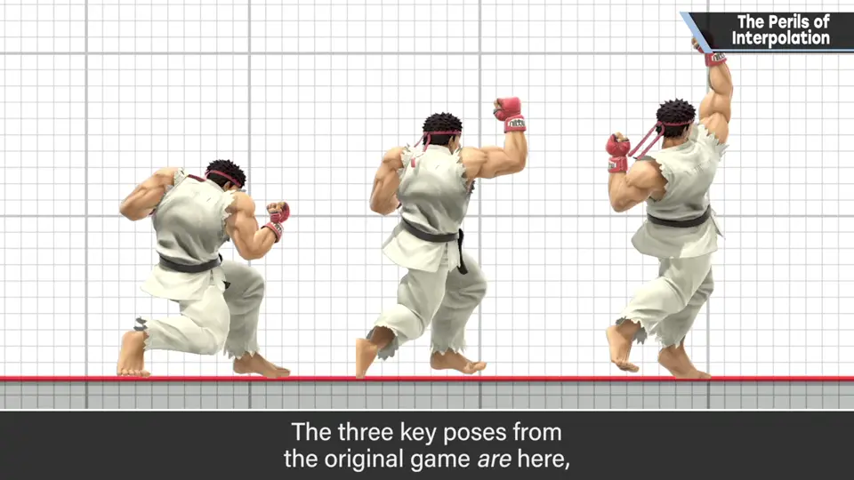
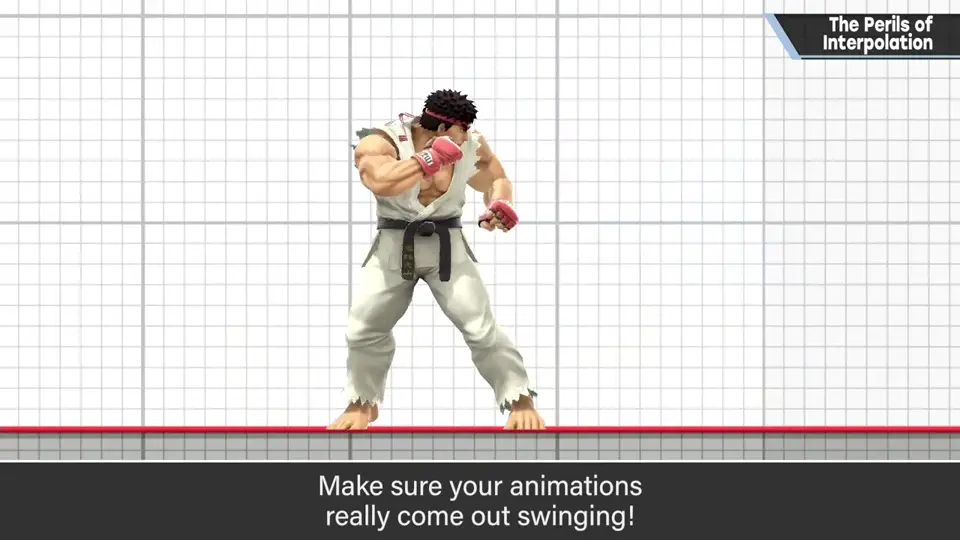
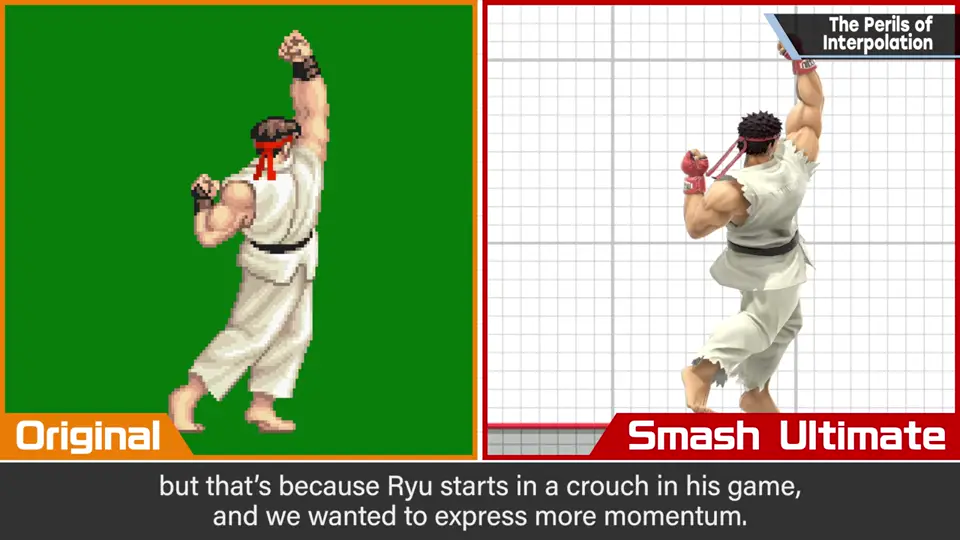
- 收招不走与攻击相同的轨迹，必然成为与原作不同的构图；这里也尽量不留破绽，和待机一样的姿势是损失。
5. 总结 3:34
每个游戏都有自己的目标，不一定跳帧就好；但要始终思考是否符合游戏、是否充分夸张。
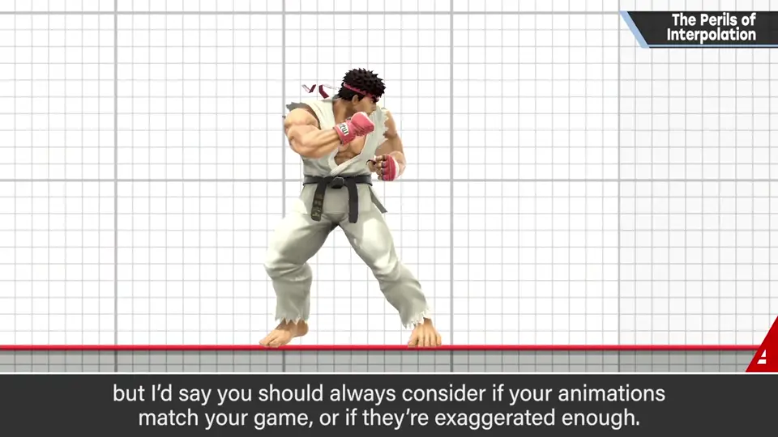
自测题
1. 为什么 2D 搬到 3D 的动作常显得软？
工具自动补间，中间动作被看到留下印象。 0:40
2. 到达关键帧应该怎么做？
偏极端：几乎不要中间帧，时间给预备和攻击，预备拉得更大。 1:45
3. 隆的上勾拳在《特别版》中做了哪些调整？
右前臂往后拉更多；接近原作的 3 个姿势各 1 帧送出；收招不走相同轨迹。 2:40